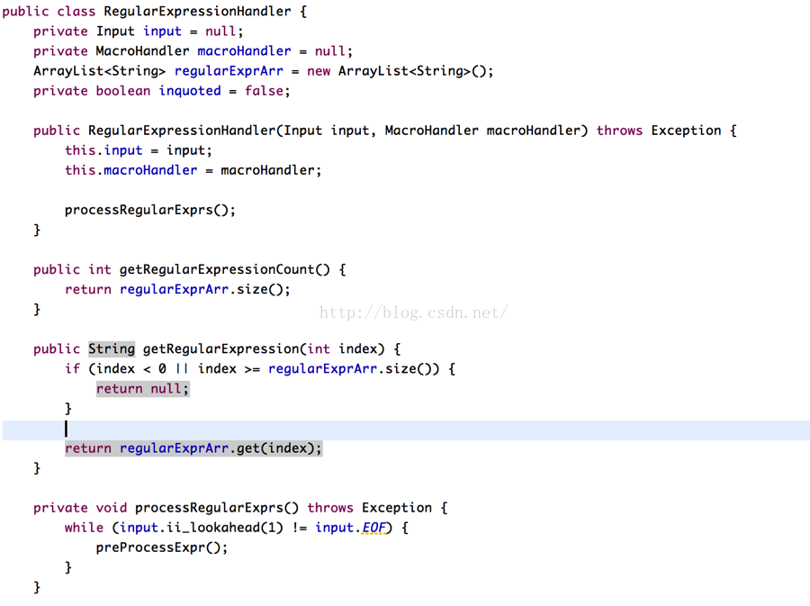

阅读博客的朋友可以到我的网易云课堂中，通过视频的方式查看代码的调试和执行过程：
http://study.163.com/course/courseMain.htm?courseId=1002830012
本节目的是Thompson构造实现的第一步，输入文本预处理.本节的代码可以在云课堂的附件中提取。
本节代码的目录结构如下：
我们程序的目的，是希望将文本格式的正则表达式转换为链表式的NFA,即将文本：
D [0-9]
{D}+ return ICON
({D}+ | {D}*\.{D}+ | {D}+\.{D}*)(e{D}+)
转换为
在转换前，我们需要对文本进行预处理，在上面的文本中，其实分成了两个不同的部分，第一部分称为宏定义即：
D [0-9]
就像C语言中的宏定义，在代码编译前要将宏进行替换，我们在转换前，也需要将正则表达式中的宏进行替换，也就是要将
{D}+ return ICON
({D}+ | {D}*\.{D}+ | {D}+\.{D}*)(e{D}+)
转换成：
{[0-9]}+ return ICON
([0-9]+ | [0-9]*\.[0-9]+ | [0-9]+\.[0-9]*)(e[0-9]+)
也就是把双括号D 换成[0-9]
宏定义的转换看似仅仅是简单的字符串替换，但它有一个难点是需要处理宏定义的间套情况，例如：
D [0-9]
A [a-z]
AD {D}|{A}
{AD}\.{AD}+
大家可以看到，宏定义AD 中，它自身的定义需要其他宏定义来组成(D和A)，
替换了宏AD之后，还需要继续替换D 和A.也就是替换分成两部
1． 由{AD}\.{AD}+ 替换成( {D}|{A} ) \. ( {D} | {A} )+
2． 由({D}|{A}) \. ({D} | {A})+ 替换成 ([0-9]|[a-z])\.([0-9]|[a-z])+
因此，在替换宏定义的时候，需要小心处理这种间套情况，间套甚至有可能会是很多层。
宏定义的组成方式如下：
名称 <一系列空格> 宏定义的内容 <一系列空格或换行>
因此，程序对宏定义的解析也根据上面的格式来入手, 宏定义的解析由类MacroHandler来处理：

我们利用一个哈希表macroMap来存储所有宏定义，如果有两个宏的名字相同，那下一个宏将会覆盖上一个, 输入系统inputSystem，将从控制台获取宏定义的内容，然后调用newMacro函数对输入的内容进行解析（调出elipse）.
newMacro 函数通过解析从控制台读入的一行内容来构造宏定义，首先是先忽略掉空格和空行，直到遇到第一个有意义的字符才开始解析。从第一个字符开始，根据宏定义的格式，我们要构造的是宏定义的名称，将所有字符集合起来，直到遇到空格为止，所集合的字符构成的字符串就是宏定义的名称。
越过宏定义的名称后面的空格，遇到的有效内容就是宏定义的内容了，将他们收集起来，放入macroContent变量，然后以宏定义的名字为key, 放入到哈希表中。
当对正则表达式进行解析时，需要进行宏替换，也就是通过给定宏的名字，获取宏的内容，接口expandMacro 要实现的是获取宏的内容：
正则表达式的文本替换:
在代码中，我们使用类RegularExpressionHandler来对正则表达式的输入进行替换，它的基本流程是，读入正则表达式文本，然后解析读入的内容，如果内容中有{}这一对符号时，程序确认需要进行宏替换，他将{}中的字符串提前出来作为宏定义的名字，通过上面提到的接口expandMacro获取宏定义的内容，用得到的内容进行替换，如果替换后还有宏定义，那么继续重复替换流程。该类的代码如下：
（调出eclipse）

input是输入系统，用于获取正则表达式的输入，macroHandler是上面我们提到的宏定义处理器。该类将所有预处理后的正则表达式都存储在一个数组中，以备后面的程序使用。在一系列初始化完成后，调用processRegularExprs 开始执行正则表达式的预处理流程。
preProcessExpr将输入的正则表达式逐字符读入，一旦遇到左括号{ 时，便准备开始进行宏替换，但如果左括号 { 是在双引号中，例如[“{}”] , 那么就将括号{当做普通字符处理，不进行替换，如果不是在双引号中，就进行宏替换。
它先将处于{ 和 } 中的字符串抽出来，作为宏定义的名字，抽取的过程通过接口extractMacroNameFromInput实现，拿到宏的名字后，调用expandMacro来进行替换操作。
expandMacro 从macroHandler中获取宏定义的内容，由于宏定义可能会间套，因此获取内容后，还需要判断，宏定义中是否间套了其他宏定义，macroContent.indexOf(“{“} 就是用于判断宏定义是否间套，如果有间套，那么将{}中的内容抽取出来，再进行宏定义替换，替换完后再次检验是否还有间套，一直这么进行直到宏定义再无间套为止。
在判断宏定义时做了一些检查，如果遇到括号{, 但没有遇到对应的},那表明输入出错，同时将出错信息打印出来。
这节，我们只对代码进行了简单的介绍，下一节，我将以运行调试的方式，进一步给大家展现代码的流程，让大家能更好的理解代码。阅读博客的朋友如果想观看代码调试流程的话，可到我的网易云课堂中观看：
http://study.163.com/course/courseMain.htm?courseId=1002830012